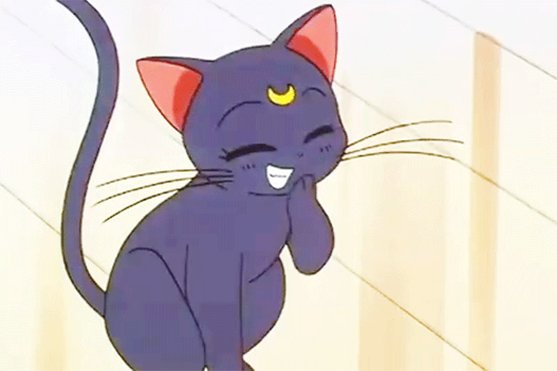

Serie de TV (1992-1997). 200 episodios
Narra la historia de Usagi Tsukino, una adolescente de 14 años muy distraída e imprudente cuya vida cambiará totalmente cuando un día por casualidad conoce a una gata llamada Luna, la cual le habla acerca de su misión como Sailor Scout y de salvar a la Tierra de futuros invasores malignos. Con el tiempo, surgen las demás sailors en su orden: Sailor Mercury (Ami Mizuno), Sailor Mars (Rei Hino), Sailor Jupiter (Makoto Kino) y Sailor Venus (Minako Aino).
USAGI TSUKINO
Ella es Usagi Tsukino y ella mantiene unido al grupo de las Sailor Scout como su compañera y líder, además de que estudia junto con Sailor Mercury y Jupiter. Tiene 14 años, es una niña llorona que va en segundo año de Secundaria; le gusta comer todo tipo de postres, leer cómics y pasarse horas frente a los videojuegos. Le gusta coleccionar cosas de conejos, le disgustan las matemáticas, el inglés y los exámenes sorpresa, en general es muy mala estudiante. Le tiene miedo a los dentistas y a los fantasmas. De carácter torpe e inocente, a Serena le gusta emprender cosas nuevas y esforzarse en lo que hace, aunque no siempre le salgan bien. Vive con sus padres Ikuko y Kenji y con su hermano menor Sammy, su única amiga es Molly. Es gran fanática de Sailor V y sueña con llegar a ser como ella, al principio le atrae Andrew y le disgusta Darien porque siempre la molesta.
AMI MIZUNO
Ami es una chica tímida a la que le cuesta hacer amigos y es muy bella; no obstante, ella prefiere estar sola con sus libros. Sus compañeros de clase la creían arrogante por su inteligencia y su conducta mal interpretada, por lo que no se acercaban, hasta que Serena se le acercó. Ella estudia mucho y a diario, siendo así que sacó la nota más alta en los exámenes nacionales, lo que llevó a sus compañeros de clase a especular que era sobrehumana y tenía un CI de 300. Matemáticas y la ciencia son sus temas favoritos, y está destinada a convertirse en doctora como su madre. Por lo general ella es calmada y sensata, es la voz de la razón del equipo.
REI HINO
En el anime Rei tiene mal carácter, es tenaz, un poco mandona pero bien intencionada, quien aspira a ser una "idol", asi como tener novio (Rei en los musicales también se interpretó así). Sailor Mars tiene otra cara en el manga; su lealtad hacia Sailor Moon es muy fuerte, y su determinación y sentido de la justicia son admirables. Ella parece mostrar cariño a las personas, de manera extraña, por ejemplo bromeando con Usagi Tsukino o con Nicolas Kumada. Aunque a veces peleaba con Usagi, claramente se preocupaba por ella y valoraba su amistad mucho.
MAKOTO KINO
Makoto, iba de una escuela a otra, por que a menudo entraba en peleas. Incluso después de que ella fuera transferida a la escuela de Serena, todavía llevaba el uniforme de su escuela anterior, porque es excepcionalmente alta y la escuela no tiene su tamaño disponible. Su primera aparición en Sailor Moon fue en el episodio 25. Su personalidad consta de ser agresiva, impulsiva y varonil, pero bastante amigable, era muy solitaria puesto que nadie le hablaba al ser tan violenta, aunque es un poco más varonil y menos expresiva con sus amigas en el manga. Ella se caracteriza por ser la extraña enamoradiza, que siempre anda recordando a un chico que le gustaba, pero no quiso salir con ella, por eso siempre se entusiasma cuando ve a alguien parecido a él. Le gustaría ser más femenina, ya que cree que así los chicos sí la tomarían enserio. Es muy precipitada y a menudo tiende a adelantarse y suponer cosas que no son ciertas, aunque es muy determinada y madura, pero no tanto como Ami. Gracias a su fuerza, se gana el respeto, admiración y hasta temor de otras personas.
MINAKO AINO
Su personalidad es bastante similar a la de Usagi en un principio, con la ligera diferencia de que ella no se echa para atrás al momento de defender sus convicciones y creencias. Como Sailor Venus, Minako muestra una faceta bastante seria al contrario de su imagen irresponsable y vaga que muestra en su faceta civil.
DARIEN CHIBA (MAMORU CHIBA)
Es el príncipe de la Tierra y según palabras de la propia Naoko Takeuchi, es el equivalente a la Senshi de la Tierra. También es conocido en el siglo XXX (Tokio de Cristal) como el Rey Endymion. Al principio de la serie, en ocasiones que Usagi está en peligro, se convierte, primeramente de forma inconsciente, en un caballero de esmoquin, sombrero de copa y antifaz blanco, capa y bastón, y cuya marca es una rosa roja, que defiende a Sailor Moon, luego en la parte de la serie denominada Sailor Moon R pierde la memoria a causa del hechizo de la Reina Beryl, al ser dominada también su personalidad de Tuxedo Mask, su alter ego toma forma como un guerrero árabe siempre de vestimenta blanca, (llamado en algunas traducciones el "Caballero de la Luna") con la intención de proteger a Sailor Moon.

LUNA
Es un personaje que aparece en el manga y anime Sailor Moon. Es una gata de color violeta oscuro que puede hablar y acompaña siempre a la protagonista, Usagi Tsukino. Ante otras personas así como la propia familia de Usagi, sin embargo, finge ser un gato común y corriente. Tiene en la frente una marca en forma de luna creciente, de color amarillo. En el animé sus ojos son rojos o marrones, mientras que en el manga son de color azul. Luna, la gata de Usagi Tsukino, proviene de un antiguo reino en la Luna llamado el Milenio de Plata; por lo tanto puede hablar, posee una inteligencia humana y otras habilidades fuera de lo común. Es ella quien informa a Usagi de que su destino es proteger al mundo y luchar contra el mal. Para esto le da su primer broche de transformación, con el cual ella puede convertirse en la heroína protagonista de la serie, "Sailor Makoton". Bajo el disfraz de esta guerrera, Usagi obtiene poderes sobrenaturales para luchar contra el mal siguiendo los consejos de Luna.
Get Started
We create beautiful themes for your site behind the word mountains, far from the countries Vokalia and Consonantia, there live the blind texts.